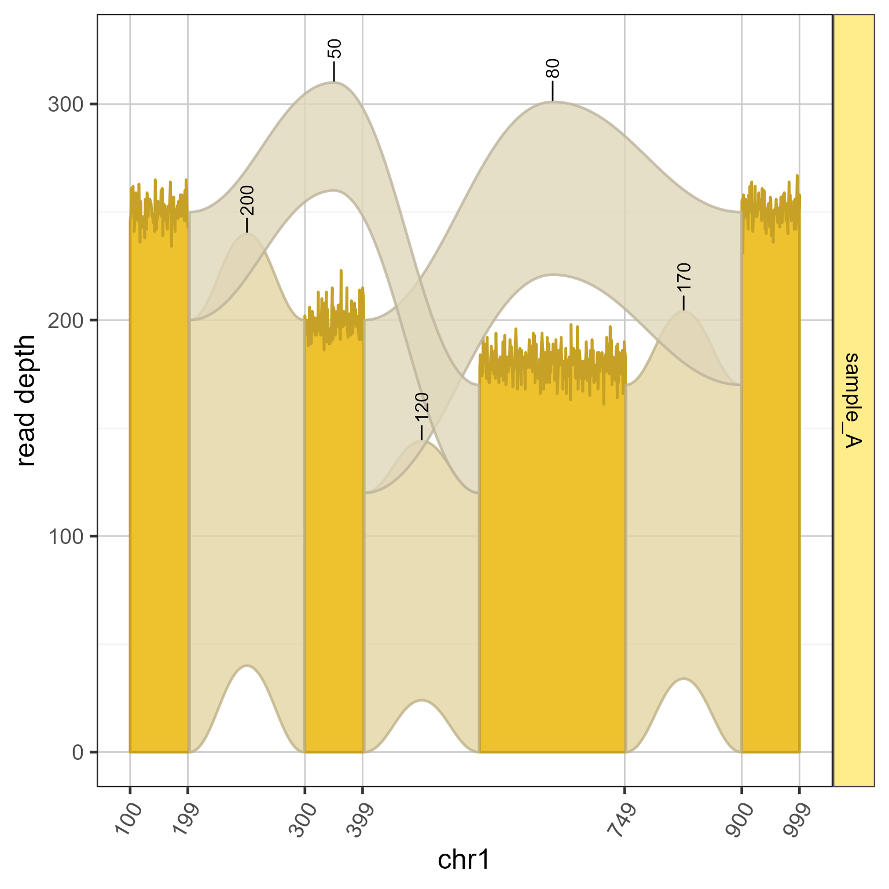

Jam Sashimi plot
Usage
plotSashimi(
sashimi,
show = c("coverage", "junction", "junctionLabels"),
coord_method = c("scale", "coord", "none"),
exonsGrl = NULL,
junc_color = jamba::alpha2col("goldenrod2", 0.3),
junc_fill = jamba::alpha2col("goldenrod2", 0.9),
junc_alpha = 0.8,
junc_accuracy = 1,
junc_nudge_pct = 0.05,
junc_fontsize = 12,
fill_scheme = c("sample_id", "exon"),
color_sub = NULL,
ylabel = "read depth",
xlabel = NULL,
xlabel_ref = TRUE,
use_jam_themes = TRUE,
apply_facet = TRUE,
facet_scales = "free_y",
ref2c = NULL,
label_coords = NULL,
do_highlight = FALSE,
verbose = FALSE,
...
)Arguments
- sashimi
Sashimi data prepared by
prepareSashimi()which is alistwithcovDFcoverage data in data.frame format,juncDFjunction data in data.frame format,juncLabelDFjunction label coordinates in data.frame format,exonLabelDFexon label coordinates per coverage polygon in data.frame format,ref2clist output frommake_ref2compressed()to transform genomic coordinates.- show
charactervector of Sashimi plot features to include:"coverage"sequence read coverage data;"junction"splice junction read data.- coord_method
charactervalue indicating the type of coordinate scaling to use:"scale"usesggplot2::scale_x_continuous();"coord"usesggplot2::coord_transform();"none"does not compress genomic coordinates.- exonsGrl
GRangesListobject with one or more gene or transcript exon models, where exons are disjoint (not overlapping.)- junc_color, junc_fill
characterstring with valid R color, used for junction outline, and fill, for the junction arc polygon. Alpha transparency is recommended forjunc_fillso overlapping junction arcs are visible.- junc_alpha
numericvalue between 0 and 1, to define the alpha transparency used for junction colors, where 0 is fully transparent, and 1 is completely non-transparent.- junc_nudge_pct
numericvalue to nudge junction labels by the percent of the maximum y-axis junction label position.The default
junc_nudge_pct=0.05nudges labels up by 5%, which makes them consistently appear above the top edge of the junction ribbon.Negative values will place labels just below the top edge of the junction ribbon.
A vector can be supplied to nudge each junction label individually, applied in order the labels appear from left to right.
Note that when the distance from label to the top edge of the ribbon exceeds a threshold, a line segment is drawn from the label to the top edge of the junction ribbon. This threshold is controlled by
ggrepel::geom_text_repel(..., min.segment.length=0.5)and is not configurable at this time.
- junc_fontsize
numericdefault 12, the text font size used when show includes 'junctionLabels' as is default.- fill_scheme
characterstring for how the exon coverages will be color-filled:"exon"will define colors for each distinct exon, using the GRanges names fromflatExonsByGene;"sample_id"to color all exons the same by sample_id.- color_sub
optional
charactervector of R compatible colors or hex strings, whose names are used to color or fill features in the ggplot object. For example, iffill_sheme="sample_id"thecolor_subshould have names for each"sample_id"value. If any values are missing, they will be filled in usingcolorjam::rainbowJam().- ylabel
characterstring used as the y-axis label, by default"score"reflects the coverage score and junction score, respectively for coverage and junction data. Scores are also adjusted using thescale_factorvalue for eachsample_idas defined in thefilesDF. Set toNULLto hide the y-axis label completely.- xlabel
characterstring used to define the x-axis name, which takes priority over argumentxlabel_ref. WhenxlabelisNULLandxlabel_refisFALSE, then the x-axis name is"", which displays no x-axis label.- xlabel_ref
logicalindicating whether the x-axis name should be determined by the reference (chromosome).- use_jam_themes
logicalindicating whether to applycolorjam::theme_jam(), by default for the ggplot theme.- apply_facet
logical indicating whether to apply
ggplot2::facet_wrap()with"~sample_id"defining each panel.- facet_scales
charactervalue used as"scales"argument inggplot2::facet_wrap()whenapply_facet=TRUE.- ref2c
optional
listoutput frommake_ref2compressed()to compress axis coordinates during junction arc calculations.- label_coords
numericvector length 2, optional range of genomic coordinates to restrict labels, so labels are not arranged byggrepel::geom_text_repel()even whencoord_cartesian()is used to zoom into a specific x-axis range.- verbose
logicalindicating whether to print verbose output.- ...
additional arguments are sent to
grl2df().
Details
This function uses Sashimi data prepared by prepareSashimi()
and creates a ggplot graphical object ready for visualization.
As a result, this function provides several arguments to
customize the visualization.
See also
Other Sashimi prep functions:
exoncov2polygon(),
gene2gg(),
grl2df(),
make_ref2compressed(),
prepareSashimi()
Examples
suppressPackageStartupMessages(library(GenomicRanges));
data(test_exon_gr);
data(test_junc_gr);
data(test_cov_gr);
filesDF <- data.frame(url="sample_A",
type="coverage_gr",
sample_id="sample_A");
sh1 <- prepareSashimi(
flatExonsByGene=GRangesList(TestGene1=test_exon_gr),
filesDF=filesDF,
gene="TestGene1",
covGR=test_cov_gr,
juncGR=test_junc_gr);
plotSashimi(sh1);
